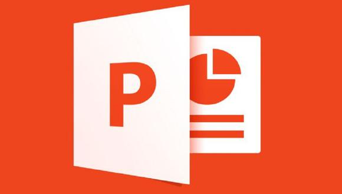
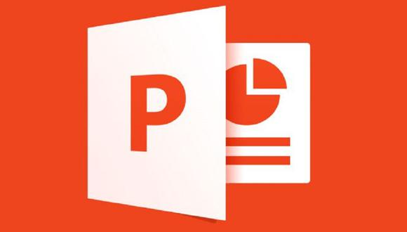
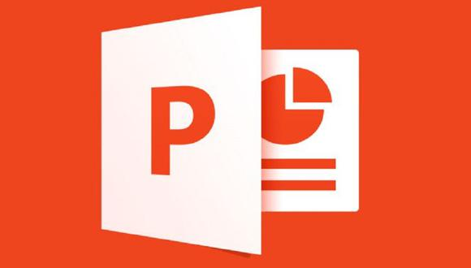

{{comm.user.displayName}}
{{comm.createdAt | date: 'dd/MM/y HH:mm'}}
Subir archivo recurso


 

{{fileName}}
{{res.user.displayName}}
{{res.createdAt | date: 'dd/MM/y HH:mm' }}
{{comm.user.displayName}}
{{comm.createdAt | date: 'dd/MM/y HH:mm'}}

{{fileName}}
{{res.createdAt | date: 'dd/MM/y HH:mm' }}